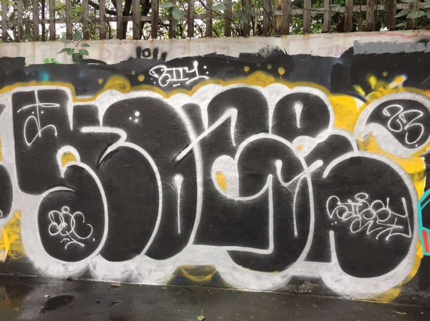

Portfolio
Graffiti Artwork- 
I'm Leian Sissy Marciane L. Briones, but you can call me Sissy. At 20 years old, I'm embarking on a journey
of self-discovery, growth, and exploration, and I'm thrilled to have you join me!
On this site, you
can expect a delightful mix of my thoughts, experiences, and passions. From personal insights to exciting
adventures, I'm here to share snippets of my life and connect with fellow explorers.
Explore,
enjoy, and don't forget to say hello! 🌟
Hello there! I'm Sissy, born and raised in the vibrant city of Quezon City, particularly in the charming
district of Fairview. My family, my partner, and my close friends are my constant sources of strength and
encouragement as I make my way through the exciting journey which is college life. These relationships
provide me joy and inspiration.
Currently, I'm in my 2nd year of college at National University
Fairview, diving into the world of information technology. Education is a key player in my personal and
intellectual journey, equipping me with the skills to navigate the complexities of the world.
When
I'm not hitting the books, you'll find me catching waves on a surfboard; there's something magical about the
sea. And, I absolutely love exploring new places. Every trip is like a mini-adventure, teaching me new
things and helping me see the world from different angles.
I have a solid foundation in both practical and theoretical aspects of Information Technology, demonstrated
through my completion of the CNX Virtual Internship Program, encompassing 15 days (120 hours) of intensive
training. Additionally, I've acquired essential skills in Oracle Cloud Infrastructure, having successfully
completed 7 hours of specialized training.
In addition to formal programs, I gained hands-on
experience in CNX's HR department, actively contributing to tasks, observing interviews, and participating in
team huddles, providing a unique perspective on the professional world.

Technical Skills:
Basic Skills:
Adaptability:
Attention to Detail:
Leadership:
Tutoring Services:
Assignment Commissions:
Artwork Commissions:

Tutoring Services:
Assignment Commissions:Artwork Commissions:
Feel free to connect for any inquiries or to discuss your specific needs. Looking forward to creating and learning together!